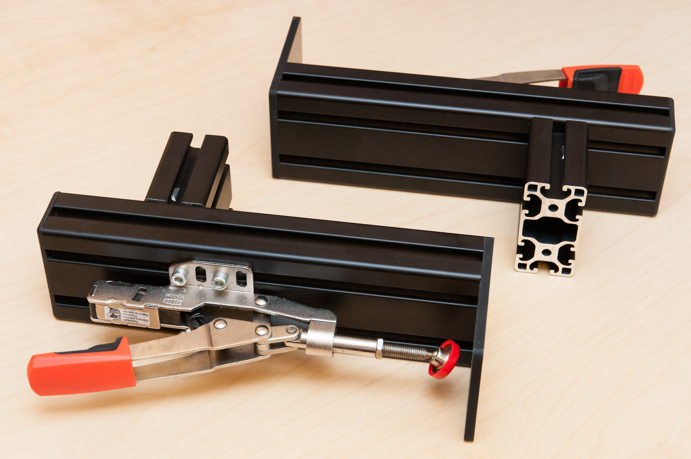
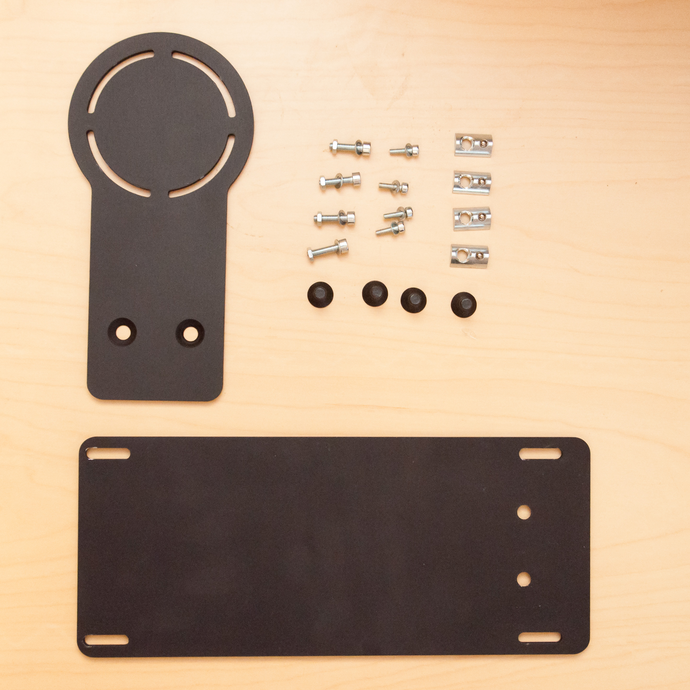
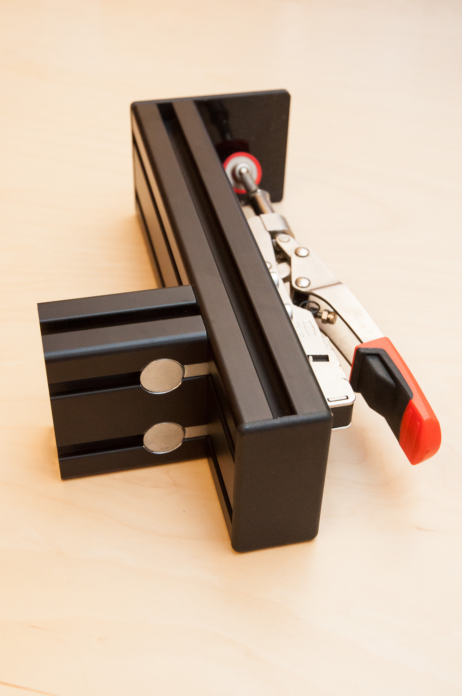
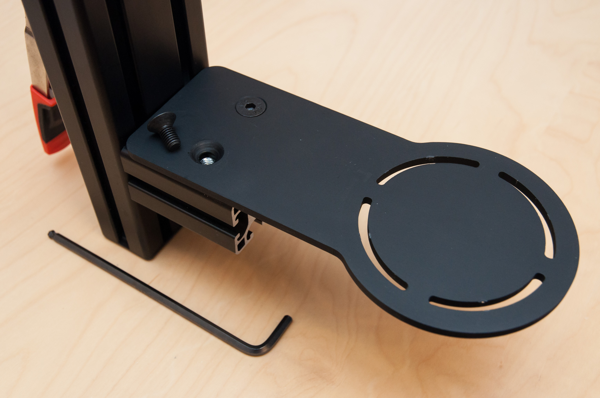
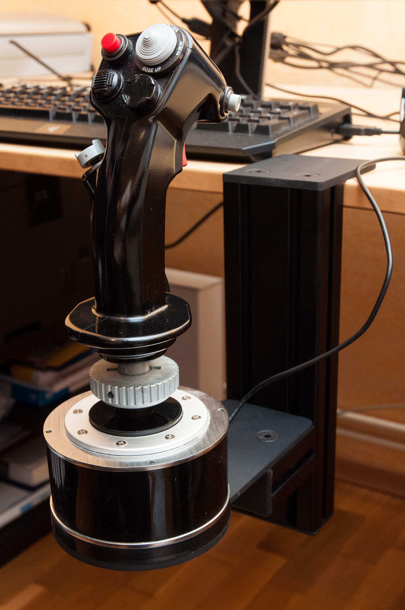
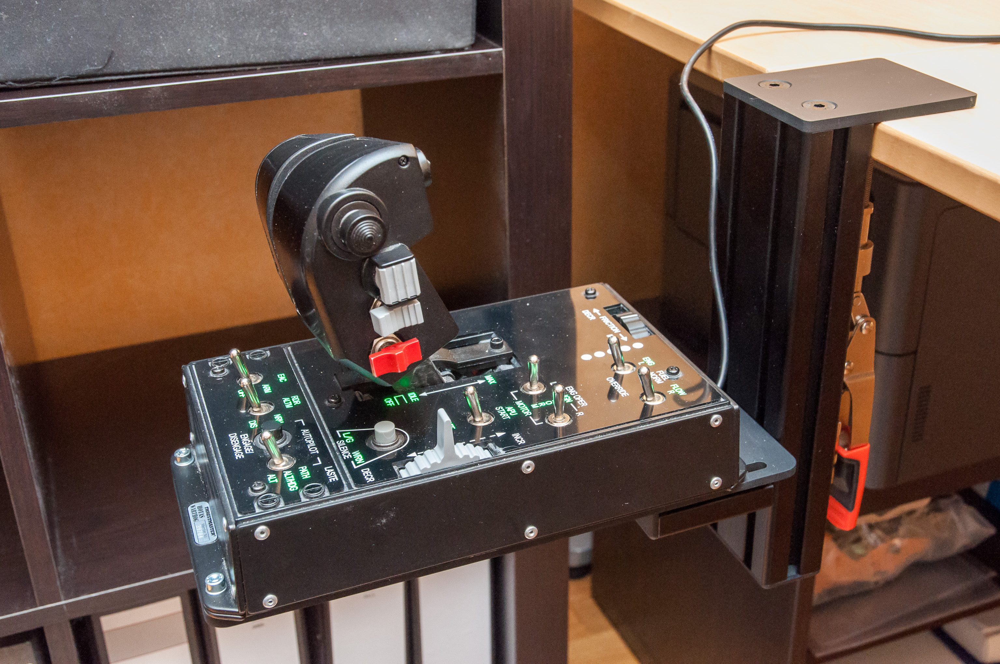
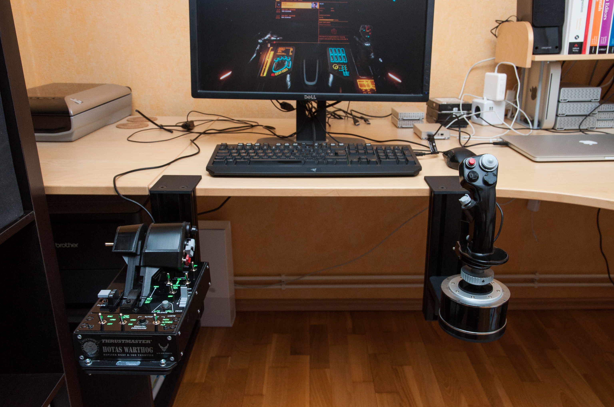

About the Monstertech HOTAS Mount
by Cmdr. Azyron
July 30, 2017
Color is … ?
For some time I've been the owner of the Thrustmaster Warthog HOTAS Flightstick and Throttle. It's a great combo, but very soon it was evident that I should get some kind of mount to make full use of it.
Searching through the internet I found that some use VESA brackets for mounting their HOTAS directly onto the chair. Given the weight and especially the size of the Warthog throttle I wasn't really sure whether this would work for the Thrustmasters. After digging a little bit deeper I found the Monstertech Table Mounts and decided to give them a try.
Delivery took about three weeks.

The table mounts as they're delivered, without mounting plates.

The mounting plates for the flight stick and the throttle.

The position of the mounting point is adjustable. The mount itself
is attached to the table with a clamp.

Attaching the flight stick plate onto the mount.

The Warthog flight stick on the Monstertech Mount and attached to
the table.

The throttle attached onto the mounting plate. Combined weight of
throttle and plate is at about 6,3 kg.

Both mounts in action.